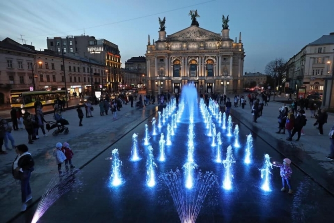
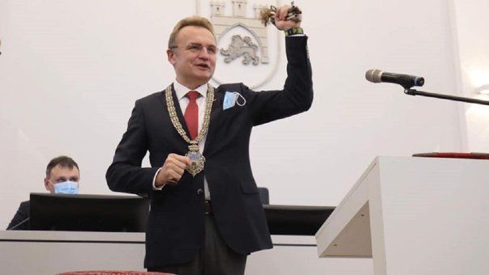

Publications of the week

Christmas fair in Lviv
Iryna Kulinich, the director of the department of economic development of the Lviv city council, called Iryna Kulinich, the director of the department of development of the Lviv city council, Iryna Kulinich, at the link with the quarantine interlocutors, had to open the decal of small locations at the place of the quarantine. Go about trading in small places, changing the number of people. Behind Kulinich's words, it is possible to shake off a small thought, and it will be possible to eat for wine.
A new fountain has opened in Lviv
In Lviv, a new fountain has been closed on the square in front of the Opera House. About the press service of the LMR. The fountain і і musical, і svitlovim. Two times a day - about 12:00 and about 18:00 - there will be an update of the compositions of Lviv viconavts. In the evening, the fountain will be filled with RGB and LED lights in a white color.
Ascent mayor
Before the hour of the lesson session of the Lviv city for the sake of Friday, 4th breast, Andriy Sadovy swore the oath and became the head of Lviv.POLITIKS
- At the ceremony ceremony.
- Privatbank seized a billion from Kolomoisky'scompany.
- Rada has failed the bill on the quality of school children.
- Comments.
- Gunpowder in the heat.
- On Armed Forces Day, Zelensky went to Donetsk region.
SPORT
European Football League
| Team | Goal | Team |
|---|---|---|
| Liverpul | 3:4 | Chelsea |
| Cardif | 0:5 | Man UTD |
| Wolves | 2:1 | Palace |